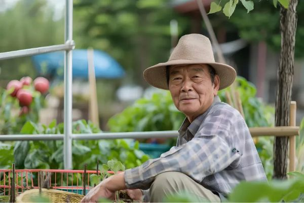
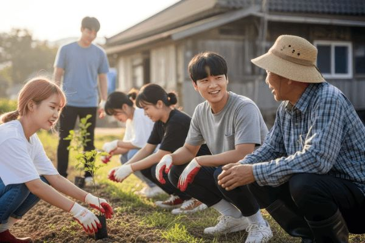

평균연령 70대 마을에 6만 명
빈집과 유휴시설을 촌캉스 · 농활학교 · 소셜링 콘텐츠로 바꾼 강원 홍천 풍암2리
평균연령 70대, 주민 200명의 산골마을에 5년간 6만 명이 찾아왔습니다. 새로 지은 것은 거의 없습니다. 이 글은 강원 홍천의 업타운 사례를 앞 편에서 본 혁신의 공식에 그대로 대입해 봅니다.
강원 홍천 서석면 풍암2리. 주민 대부분이 어르신이고, 빈집과 쓰지 않는 시설이 늘어가던 전형적인 농촌 마을입니다. 업타운(와썹타운)은 이 마을 주민들과 함께 유휴시설을 활용해 촌캉스, 농활학교 같은 농촌 체류 콘텐츠를 만들고, 이를 농촌관광으로 연결했습니다.
농림축산식품부도 이곳을 농촌관광의 모범 사례로 소개했습니다. 숫자로 보면 변화가 더 분명합니다.

빈집과 유휴시설을 촌캉스 · 농활학교 · 소셜링 콘텐츠로 바꾼 강원 홍천 풍암2리
업타운은 농촌에 숙박시설 하나를 더 만든 것이 아닙니다.
농촌의 문제를 다르게 정의했습니다.
보통 농촌의 문제는 “관광객이 부족하다, 일자리가 부족하다, 빈집이 많다”로 봅니다. 이렇게 보면 해법도 뻔합니다. 숙소를 짓고, 홍보를 하고, 축제를 엽니다.
업타운은 한 걸음 더 들어갔습니다. 진짜 문제는 “도시 청년과 농촌이 서로 연결되어 있지 않다”는 것이라고 보았습니다. 업타운 스스로도 사람과 사람, 지역과 도시의 관계를 만드는 것을 지역소멸 해결의 핵심으로 설명합니다.
비즈니스의 첫 번째 요소는 ‘해결할 문제’입니다.
문제를 어떻게 정의하느냐에 따라 해결 방법도, 고객도, 수익 구조도 모두 달라집니다. 업타운의 혁신은 여기서 시작됐습니다.
비즈니스혁신연구소가 정리한 혁신의 공식을 다시 꺼내 보겠습니다. 비즈니스를 이루는 세 가지를 바꾸고, 여기에 기술과 이업종을 융복합하는 것입니다.
이 공식에 업타운을 넣으면 이렇게 풀립니다.
농촌도, 빈집도, 농사도, 청년도, 여행도 원래 있었습니다. 업타운은 이것들을 발명하지 않았습니다. 묶었습니다.
특히 눈여겨볼 부분은 주민의 역할입니다. 업타운은 주민에게 밭 관리와 재배, 프로그램 진행을 맡기고 인건비를 지급합니다. 주민이 기른 메밀과 지역 농산물은 다시 프로그램과 상품에 쓰입니다.

농촌자원 × 도시청년 × 체험콘텐츠 × 주민 × 커뮤니티 × 플랫폼
혁신은 현장에서 크게 네 가지 패턴으로 나타납니다. 업타운이 흥미로운 이유는 이 네 가지가 모두 겹쳐 있기 때문입니다.
지역소멸과 농촌 침체라는 오래된 문제에 촌캉스, 농활, 소셜링이라는 새로운 콘텐츠로 답했습니다.
‘관광객이 부족하다’가 아니라 ‘도시 청년과 농촌의 관계가 끊겼다’로 문제를 다시 정의했습니다.
농촌 × 관광 × 숙박 × 놀이 × 교육 × 커뮤니티 × 로컬콘텐츠. 원래 따로 움직이던 업종들을 하나의 경험으로 묶었습니다.
관광객 → 체험자 → 관계인구 → 반복 방문자, 나아가 정착 가능 인구로. 고객과의 관계 자체를 바꿨습니다. 업타운에서 가장 주목해야 할 부분입니다.
네 번째 패턴, 고객관계 혁신을 조금 더 들여다보겠습니다. 차이는 고객이 마을에 들어와서 나갈 때까지의 흐름을 나란히 놓으면 바로 보입니다.
돈을 쓰고 돌아가면 관계는 거기서 끝납니다.
돌아간 뒤에도 관계가 이어지고, 그 관계가 다시 방문을 만듭니다.
그 지역에 살지는 않지만, 꾸준히 찾아오고 관심을 갖고 연결되어 있는 사람들을 말합니다.
한 번 왔다 가는 관광객과 아예 이주하는 정착인구 사이에 있는 사람들입니다. 지역소멸을 막는 현실적인 해법으로 주목받고 있습니다.
전통적인 농촌관광이 파는 상품은 농산물, 숙박, 경치, 체험이었습니다. 업타운은 한 단계 더 나아가 농촌 자체를 하나의 콘텐츠 플랫폼으로 바꿨습니다. 무엇을 더하느냐에 따라 가치가 이렇게 올라갑니다.
경치 좋고 조용한 곳. 한 번 보면 충분합니다.
무언가를 하고 즐기는 곳. 기억에 남습니다.
누군가를 다시 만나러 가는 곳. 다시 오게 됩니다.
실제로 업타운은 같은 마을을 다양한 고객에게 맞춰 여러 상품으로 만들어 팔고 있습니다.
농촌에 콘텐츠를 더하면 경험이 되고, 사람을 더하면 관계가 된다
1편에서 비즈니스 혁신의 최고의 철학은 Why와 Who라고 했습니다. 업타운은 이 두 가지가 모두 선명한 사례입니다.
김성훈 대표는 이전 사업의 실패를 겪은 뒤 사회에 필요한 가치를 앞에 두고 사업을 보게 됐다고 말합니다. 지역과 청년을 연결해 사회의 외로움 문제까지 풀고 싶다는 것이 업타운의 방향입니다.
도시 청년만으로도, 농촌 주민만으로도 어렵습니다. 청년 창업가와 마을 이장, 고령 주민, 도시 청년 고객, 농가, 지역사회가 함께 움직여야 돌아가는 구조입니다.
한림대 지역브랜딩 포럼에서도 업타운 사례를 소개하며, 작은 지역 사업일수록 주민의 협조를 얻고 주민과 하나가 되는 것이 중요하다고 강조했습니다.
Why는 혁신의 나침판이고,
Who는 혁신의 엔진이다.
이 사례가 중요한 이유는 새로운 첨단기술 없이도 혁신이 가능하다는 것을 보여주기 때문입니다. 기술은 혁신의 강력한 촉매이지만 혁신 그 자체는 아닙니다. 업타운은 이미 있던 자원을 새로운 문제정의와 새로운 연결 방식으로 다시 조합해 가치를 만들었습니다.
업타운에게는 대기업의 자본도, 첨단 기술도 없었습니다. 있는 것은 오래된 마을과 어르신들, 그리고 문제를 다르게 본 시선이었습니다. 그래서 이 사례는 작은 사업을 하는 분들에게 더 쓸모가 있습니다.
내 사업에도 같은 질문을 던져 보십시오. 내가 풀고 있다고 생각한 문제가 정말 고객의 진짜 문제인가. 내 주변에 이미 있지만 따로 놀고 있는 자원은 무엇인가. 그리고 고객이 한 번 사고 떠나는 사람이 아니라, 관계를 맺고 다시 찾아오는 사람이 되려면 무엇을 연결해야 하는가.